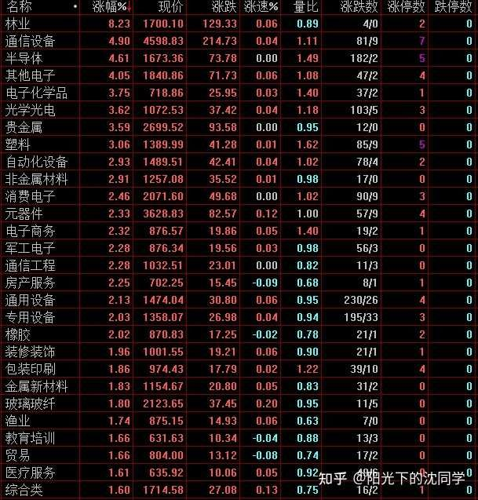
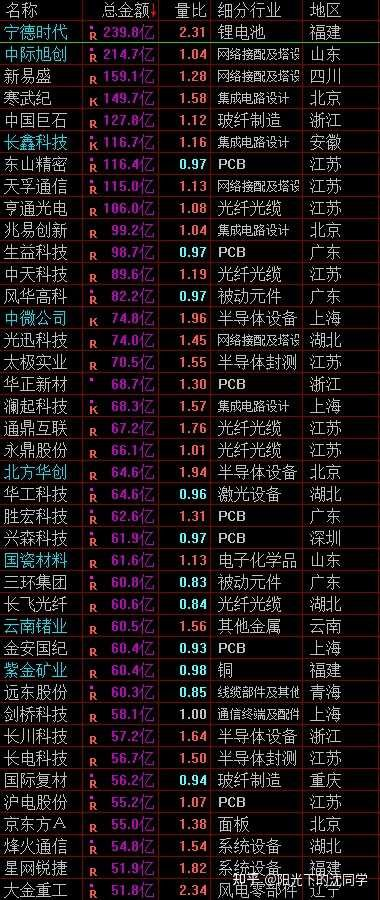
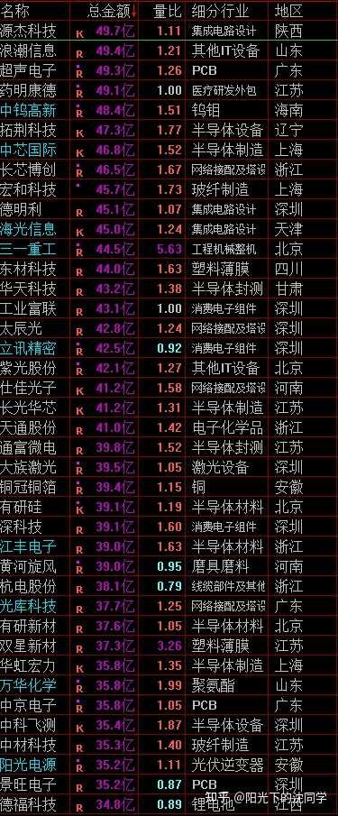
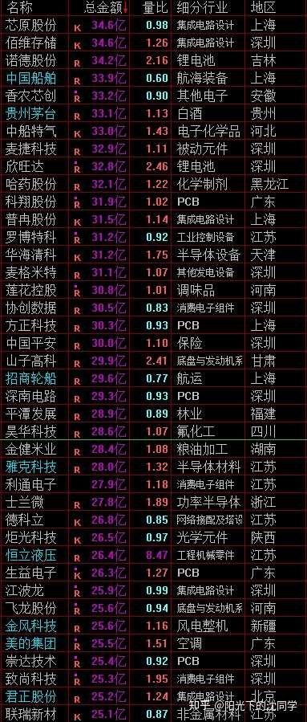

本文的核心逻辑是基于‘全球加息周期重启’这一宏观背景下的流动性收紧与大类资产定价重估。作者指出，当美联储等全球央行开启加息，无风险利率上升，资金成本增加，这会导致资本市场整体估值承压、泡沫挤压。传导链条为：加息导致存款及债券等无风险收益率提高 -> 资金从高风险、高估值的权益市场撤离 -> 股票市场（尤其是高位科技和高估值白马）资金面变弱、遭遇杀跌。因此，在加息大周期中，投资者不能把加息当作短期利空消息来看待，而应该树立周期思维，采取总仓位控制（保持在55%以下）、逢低布局低估值优质品种、利用现金规避熊市风险的策略。
美联储重启加息，未来全球资本市场波动会加大，肯定很多投资者交易方面会比较迷茫，所以今天就早一点分享
首先现在这种行情千万不能红盘的时候加仓，尤其是高开拉升的时候加仓性价比很低
把握每次杀跌机会注【本质逻辑】在流动性收紧的大熊市或加息周期中，市场缺乏整体性牛市的增量资金，主力资金和机构往往在情绪恐慌、集中抛盘（杀跌）时才被动出现短暂的超跌反弹买点。便宜是抵御系统性风险最好的武器。【新手提示】切勿在红盘或高开时盲目追高，因为那是主力资金诱多出货的常见陷阱，只有在市场大跌、无人问津时才有相对高的安全边际。配置低位优质科技，白马蓝筹，控制好总仓位，是目前最重要的实战策略
全球加息周期重新启动，大家一定要知道加息是周期性的影响，不是一天两天的一个利好，利空消息，影响是很深远的，短期波动不能完全诠释加息周期的影响
利率提升，无风险利润提升，资金的成本提升，对于泡沫大，估值高的股票来说杀伤力很大
全球慢慢步入加息周期，尤其是美联储开启加息以后越来越多央行都会跟，国内也没有了降息空间，流动性下降，股市资金面变弱，行情肯定难做
用大白话讲就是，存钱可以获得利息越来越多，肯定很多资金就不想冒险去其他地方博弈赚钱，这个就是加息对资本市场的影响
刚刚开始加息其实影响没有那么大，因为需要一个过程，而且要看具体累计的幅度
所以刚刚开始加息大家只关注短期消息面走势，但加息是周期，这个开头就聊了
一旦加息到了一定程度，就是会有资金不断撤离股市去选择无风险利润
撤离股市肯定是首先选择贵的方向，高位方向
每一轮加息周期都是股市挤泡沫的周期，不是一天两天对消息面的反应，是一整个加息周期大趋势行情的影响
大家有了周期的概念和理解，就不会单纯的看加息情况确定以后短期走势，而是脑子里面考虑到配置资产的时候，要想到加息周期下的风险情况
加息周期下必须是低位，跌透的，低估值的优质品种才能比较抗跌，其他的不管短期表现怎么样，拉长时间都会是一个下跌趋势
如果是第一次经历加息周期的朋友，就更加需要把这个经验心得记下来，最好收藏一下，抄下来，经常复习，对你帮助会非常大
因为你可能会因为加息就是一个短期利空，过去就没了，可能觉得一些股票，板块短期没有影响，后面就没事了
完全不是这样的情况，后面一定要关注利率的周期变化，加息是累计起来的威力越来越大
而且加到一定程度，低位品种也要会跌，只不过跌幅大小问题，就连很多红利也一样
因为利率如果高到让股息不够看了，就肯定让红利资产也性价比下降
所以控制总仓位，多留现金，最起码总仓位低于55%非常重要，加息周期里面鬼故事是最多的，现金流是最好的资产，拿得住钱，看清楚加息周期具体情况
全球这一轮加息周期什么时候结束，什么时候股市容易有比较大的行情，这个是挺漫长的，急不得
把仓位优化好，拿得住，慢慢看，不要拿着股票看，不然套的越来越深，下一轮牛市来了都不一定解套

- 列表展示了不同行业板块的涨跌幅与量比数据，反映出市场在弱势震荡下的板块轮动特征。
- 多数板块涨幅偏小或出现负值，量比普遍不高，暗示场内资金观望情绪浓厚，多头缺乏持续推升行情的爆发力。
- 新手应从中看出市场缺乏赚钱效应，切忌盲目跟风买入表现散乱的杂毛板块。
每天原创不易，读者朋友千万不要忘记点赞支持一下
正所谓先赞后看，腰缠万贯
大家可以先点一波赞，我们再继续慢慢聊
祝点赞的朋友福寿无量，天天开心
大家明白了加息是一个周期性的影响以后，就明白了，在这个大的周期里面，买点就只能是杀跌的时候买
因为便宜抵得过一切利空
这个就和算数题一样
估值贵了，这边利率又高了，那么股价对应的跌了，就风险释放了
后面利率又提升了，股价对应了肯定又要往下走一波来继续释放风险，是这样一波一波的估值调整
只有在杀跌的时候买入，才有超跌反弹机会，买贵了，或者满仓动不了的，那么整个加息周期是非常难受的
最好算估值的是肯定还是红利资产
降息周期里面，股息率4%以上都弥足珍贵，加息周期里面，考虑到利率提升了，股息率也要提升1%-2%才能让大资金觉得不错
很多红利股在加息周期的估值底线很多就是股息率5%-8%，在降息周期里面股息率到3%-4%，这个波动也是对应的大资金结合利率情况，可以接受的股息率波动范围
刚刚好这段时间红利资产分化注【本质逻辑】红利资产的逻辑在于稳定的股息率。当全球加息导致无风险利率（如银行存款和国债收益率）持续上行时，原本具有吸引力的股息率就会显得‘不够看’，导致大资金从红利股中流出，从而引发红利资产的高位分化与估值下调。【新手提示】不要盲目迷信红利股永不跌，必须结合当前市场的无风险利率动态调整预期，等其价格下跌、股息率重新提升至有吸引力的区间（如5%-8%）时再考虑布局。比较大，可以获利了结一部分高位红利出来，等他们跌一波，股息率提一提，到时候再重新布局
低位的优质白马蓝筹股，低位科技，能杀跌，就可以化解风险，就能加一点仓位，上涨需要t出来，获利了结
千万不能追高，不能红盘去买，不然就和下跌趋势，加息周期背道而驰了
这种行情难做的关键是，很多投资者交易是没有这些理念的，是任何行情下，都是随心所欲的乱做，都是在追涨杀跌，没有仓位控制，也没有考虑大环境是什么周期
如果你有这些考虑，现在行情不太好，加息周期，你有优化好持仓，总仓位低于55%，持仓高位的品种卖掉了，该止损的也果断止损了
而且只在杀跌加一点仓位，反弹就出来，这样慢慢熬，细腻的做，那么轻松也时不时会有行情
大熊市周期里面一年都经常有2-3波大的超跌反弹
关键是你不能总是满仓套在里面，不然每次大跌你都在里面亏，也没钱加仓，后面反弹和你也没关系
任何行情都有一套玩法，我们要尊重市场的变化来调整玩法，而不是巴不得天天是放量大牛市
是我们投资者要学会适应市场，市场不可能反过来适应我们
最适合新手投资者，上班族，股龄10年内投资者的投资策略分享
美股依旧在高位，暂时没有定投机会
黄金波动很大，避开拉升的时候，每次杀跌下来都有机会，可以杀跌时候把握每周定投机会，不需要天天买，每周定投1次足够，保护好现金流
红利资产分化很大，关注低位即可
债券依旧是目前最好的资产，可以闲钱配置
现在加息周期开启，各种资产都有压力，就算是美股，红利，黄金这样的资产，也是只能在低迷，杀跌的时候才有配置机会，买贵了一样影响复利
红利一定要选低位，股息够高，够稳的，不然未来持续加息下去，很多股息不够的红利股也会往下走一波，跌到股息率有吸引力才会止跌
债券一定要避开长期的，尤其是加息加多了，短债才会有防御性，利率越来越高短债比长债价值大的越来越多
这个很好理解，真的利率提上来，各种活钱理财就是收益最好的，利率半死不活的时候中期理财收益比较好，大幅降息肯定是长债好
债券是非常多元化，不同周期都有可以配置的好资产，现在只要不做长期债券，中短期债是很好现金类资产，加息越多，短债越好，中期债券目前影响不大，后面都要慢慢往短债去选
加息周期资本市场都不太好做，最终还不如简单的玩玩债券收益高，因为加息周期里面，很多投资者平均是亏损30%以上的，其实喜欢做短线，追涨杀跌的投资者，在熊市还没有开始之前都很多亏30%以上，真的走完一整轮熊市，不少是本金都亏空的
回过头看，别说是债券了，只要存个活钱都肯定比在股市搞来搞去好
这个就是行情难做的情况下，现金流一定是最好的
等大家熬过来这一轮杀跌行情也会，再来看我的这些复盘，大家会更加理解，留着钱比什么都好
做什么都可能是错的，因为行情差，你买什么胜率都不高，持有大量现金，不是非常核心的资产，非必要不持仓，才是唯一正解
就像大部分个股在加息周期，熊市里面，是不可能比得过美股，红利，黄金，债券这样的长期资产的
那么后面还需要预留大量的现金去慢慢买这些资产，哪里还有那么多仓位给乱七八糟的股票
还是要多优化持仓，减少负担，减少个股持仓，确保自己的持仓都是低成本的，都是一些这种长期优质品种
底线是不能超过55%总仓位，不然一波熊市走下来，依旧是会损失惨重的
这些仓位优化，风险控制一定是要提前说的，不然真的都走到熊市末期了，都跌的七七八八了，再聊风险没意义了
真的到时候已经3000点附近了，还天天说风险，有什么意义，那时候再优化，再割肉，反而可能是大错误
就是要在还有优化空间，一切才刚刚开始的时候去做优化，投资就是未雨绸缪，快市场一步，才能跑在风险前面，总是要看见大跌，看见熊市发展的非常深了，那其实是非常被动的
就像止损这个事情也是基本上天天聊，7%以内止损是职业投资者公认伤害最小的，回本最快的
一旦亏损到了7%以上难度不断提升，20%以上，难度会提升很多倍，50%以上基本上要搭进去一整轮行情的代价
所以止损慢了，后患无穷，在还可以调整的时候调整，小亏都是赚钱的成本罢了，没有及时的调整，怎么可能有后面跟上行情赚钱的机会
卖错了，最起码钱在，其实都不算错，市场到处都是机会，就怕钱没了
希望大家在理解这些的时候，本金是在的，未来的行情肯定会压力复杂，一定一定把风险控制好
我们提前把各种风险都聊透，尽可能把本金保护好
到时候真的跌下来，实际上机会更多，那时候肯定大家都在聊风险，聊亏了多少钱，聊这辈子不再投资什么的，那没意义，那时候反而寻找核心资产，慢慢吸收廉价筹码的时候，聊这些风险都晚了
还有余力的肯定是慢慢加仓了，没有余力的，人家亏了50%以上的，让人家怎么动，不如删掉软件不看

- 给出了各大核心宽基指数（如上证指数、创业板、科创板等）在不同估值状态下的点位参考表。
- 帮助投资者在宏观周期波动中锚定‘泡沫区、高估区、合理区、低估区’的心理界限，避免在模糊的市场中凭感觉盲目抄底。
- 新手提示：当指数远未到达低估区间时，切莫轻易满仓，必须耐性等待真正的安全底线。
大家有任何投资疑问，有什么想交流的都可以付费咨询，想单纯支持一下也可以
【在知乎上我的主页咨询即可，没有任何群，不搞私下小圈子】
家庭资产长期稳健配置方案分享，仓位优化，估值分析，行业分析，心态调整，各种投资学习技巧都可以咨询
大家的支持和尊重是我创作的最大动力
感恩大家每天的付费咨询和打赏，感谢大家对知识的尊重，感谢大家对我的支持
欢迎提问
适合职业投资者，10年以上经验老股民，基本功极其扎实投资者的实战分享
继续聊实战
这段时间整体交易非常克制
长线账户主要也是围绕港股做一些买入，扑街比较多，核心港股持仓加一点仓位
短线账户虽然重新开始加仓，但依旧在10%以内，不打算快速加仓，每次反弹起来也会t从来一部分，控制好风险
因为整体行情很弱，不需要快速加仓，主要是试探性的做一些超跌反弹，布局一些看好的自选股，看看他们的走势情况
很多低位科技看起来都差不多，不试一试不知道具体股性怎么样，主要是做一些这种试探性交易，对自选股了解越深，以后真的要认真加仓了就有目标
有时候好几个差不多的股票放你面前，很可能不知道选什么，龙头股还好选，行业龙头就1个，ETF看看成分股也好选，就是一些二三线的优质企业，很多类似的股票可以去对比，那么只能是选自己了解的，选股性活跃的，才容易博弈成功，那这种工作只能平时去做
有杀跌的时候多尝试一些这方面的交易，不然你肯定不清楚这个股票实战有哪些特点，做t，做波段肯定都是不顺手的
这种具体某一个股票的走势特点和攻略，去什么地方都查不到，只能自己勤奋一点，直接平时小仓位多尝试，多体会
自选股池子组建和培养，都在这些日常的点点滴滴里面
你没有长期去跟踪调研，没有经常去交易和这个股票交手，你其实都这个企业，对这个股票都是不够了解的，都是模糊的
做自己不熟悉的股票，胜率就是低的
老股民应该很明白我在说什么，大家肯定也都遇见过，一些非常看好的企业，但自己没有实战做过，刚刚去开仓就很容易亏钱，做t也不顺手
其实就是股性还没有掌握，这个是一个过程
未来只要在3950-3650区间，有发生大跌，可以对一下看好的，低位的优质企业做一些开仓尝试
下跌趋势就是稳住，留着钱，慢慢的了解自选股，筛选企业，研究企业，行业的过程，在行情不好的时候学习，提升，稳住心态，以后行情好了，你才有更多的能力去尽可能的多赚钱
以后有时间我也会多分享各种投资心得，行情不好就少聊行情，多聊投资经验，一样挺好的
在资本市场知识和经验都是会在未来变成钱的
现在最重要的事情就是先控制好总仓位，先把整体账户风险降下来

- 展示了按总金额排名的个股资金流向与细分行业分布，龙头公司依然是机构抱团或资金博弈的主要战场。
- 成交金额的高低直接映射了市场资金的关注度与多空双方的激烈交锋点。
- 新手通过观察头部企业的成交额，可以清晰识别出哪些是主力资金不愿轻易放手的核心资产。

- 延续了市场个股总金额与量比的详细排查，部分二三线科技与半导体标的量比放大，说明有短线资金在进行试探性博弈。
- 多空博弈在板块内部呈现分化态势，部分个股的活跃并不代表整体行情的转暖。
- 新手提示：面对此类中游和二三线标的，缺乏跟踪调研经验时极易踩雷，切勿仅凭成交额靠前就盲目跟风入场。

- 尾部成交额与细分行业清单揭示了冷门板块与部分滞涨标的的市场冷清状态。
- 大量个股量比低迷，反映出市场整体流动性匮乏、交投不活跃的熊市特征。
- 新手必须清醒认识到在整体缺乏活水的大环境下，大部分普通个股不具备赚钱效应，唯有紧抱现金和核心资产才是上策。
风险提示：股市有风险，入市须谨慎
今天是坚持写复盘笔记的第1525天【每日打卡】
下面是我自己多年来的一些重要的心得感悟，分享给大家，会不定期增加内容
1，
长期投资成功的关键是稳定的情绪和沉稳的性格，这些比过人的天赋更重要
2，
最终我们穷其一生获得的一切经验、知识和所有财富都需要转化为自身的品德修养，不然获得越多失去越多
自身的修养是留住各种财富最好的容器，富裕一时不难，富裕一生不易
珍惜获得的一切，保持初心、慈善、知足，让自己的德行和财富共同成长，才能方得始终
3，
古之成大事者，不惟有超世之才，亦必有坚忍不拔之志
想成为优秀的投资者一定要持之以恒，不断学习，反思，总结，在投资中获得的各种经验最终都会成为你财务自由的砖瓦
4，
再高的智商也一样会被情绪一瞬间冲垮
大部分的亏损都来源于投资者的冲动和情绪化交易，学会控制自己的情绪和心态才能长期稳定的复利
5，
富在术数，不在劳身
一定要多思考，任何时候想清楚了再交易，漫无目的的交易，只会多做多错
6，
利在势居，不在力耕
投资赚钱主要靠把握时机，没有机会就休息，多留现金
做可以让自己心安的投资，便是对于你来说最好的盈利模式
7，
谨记：贪念起，万念俱灰！
控制住了风险，利润会随之而来
富贵险中求，也在险中丢
求时十之一，丢时十之九
美，港，A股长线+短线所有股票持仓投资方向配置比例参考：
金融：10%
消费：31%
生物医药：13%
AI产业链：7%
能源，动力：9%
高端制造：25%
周期：5%
【每3-6个月更新一次】
最新更新时间2026年9月
祝大家在如梦如幻的行情里清醒而自由
仓位情况【不推荐模仿】
短线博弈仓位：3%
长线+短线总仓位尽可能低于55%，这样更符合当前行情的风险程度
长线资产配置目前个人分散持有：各种债券ETF+各种核心红利ETF+美股ETF+黄金+优质REITS+长期看好的优质企业+核心ETF
本文从宏观加息周期的底层逻辑出发，深刻剖析了流动性收紧对A股市场估值与资金面的压制作用。核心逻辑总结：加息周期下无风险利率上升，资本从权益市场撤离是必然趋势，市场将进入长期的挤泡沫与震荡筑底阶段。新手防踩雷法则：1. 严控总仓位，保持长线加短线总仓位在55%以下，手里必须留有充足的现金流；2. 坚决摒弃追涨杀跌的坏习惯，只在市场恐慌杀跌、估值跌透时寻找低吸机会；3. 树立长期周期观念，在行情不佳时多学习、多研究自选股，切勿盲目满仓死扛，保护好本金才是立足股市的根本。

{kind=link}
每日笔记
1、 全球加息周期重新启动，千万不能红盘的时候加仓，把握每次杀跌机会配置低位优质科技，白马蓝筹，控制好总仓位。
2、 美股依旧在高位，暂时没有定投机会
3、 黄金波动很大，可以杀跌时候把握每周定投机会，每周定投1次足够，保护好现金流
4、 债券依旧是目前最好的资产，可以闲钱配置
5、 红利资产分化很大，关注低位即可
多学习，先苟着，现阶段持有现金最实际。
感谢老沈的提前更新，我确实有点迷茫，不过目前总仓位已经到了50%，也没有那么害怕，就是怕老美这样持续加息下去，把我的红利底仓加崩了，这个还是有点焦虑的
投资真的有时候很容易影响心情，导致上班，生活中一直想着这些事情，可能投资到最后，其实是在修炼自己，你对市场的认知，对风险的敬畏，对欲望的克制，最终都会反映在账户上
我现在修行远远不够，做不到对各种波动无动于衷，只能慢慢提升
昨天刚刚给自己打气投资红利和纳指持有5年起，今天就感觉要不还是减仓慢慢玩/捂脸 难受的一笔 果然长期持有不动是超难超难的
打个卡先[微笑]